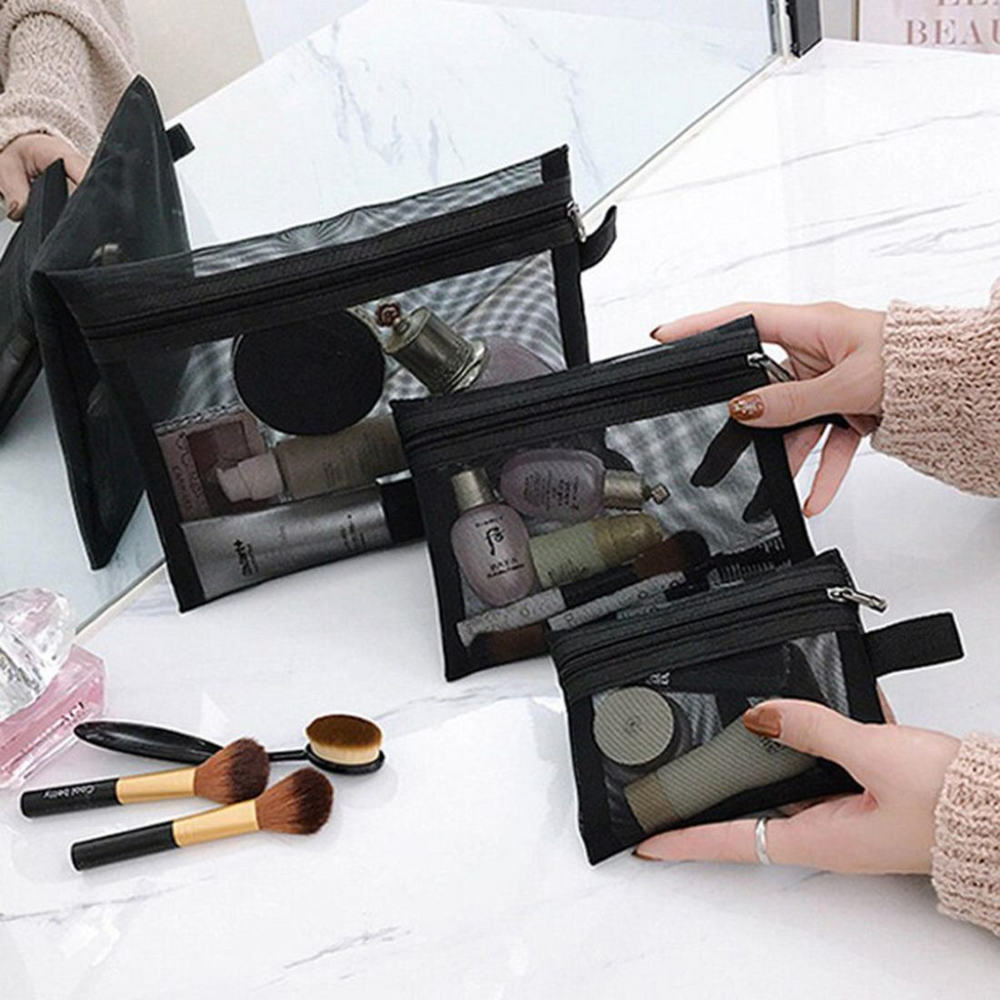
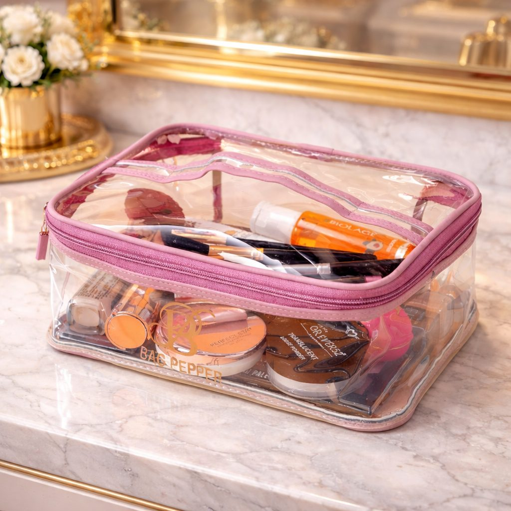

Pakistani weather is tough on beauty products. Karachi's humidity stays high for months, Lahore's summers are scorching, and even in the north, monsoon rain brings damp. Creams separate, lipsticks melt, foundation changes colour, and bathroom shelves become warm, wet places where bacteria thrive. Many people do not realise how much money is lost on products that spoil before they are used up.
Good organisation is not just about looks. It protects your products, keeps them hygienic and helps you use what you have before it expires. This guide explains how.
Move products out of the bathroom
The bathroom is the most common place for skincare, and the worst. Every hot shower creates steam and warmth that break down active ingredients like vitamin C and retinol, and humidity encourages mould in jars. If possible, keep your main collection in the bedroom, on a dressing table or a shelf away from direct sunlight. Keep only daily cleansers and shower items in the bathroom.
Sort and declutter
Take everything out and sort it into groups: cleansers, moisturisers, serums, sunscreens, makeup, tools and samples. Check expiry dates. Most products have a small open-jar symbol showing how many months they last after opening, such as 6M or 12M. Throw away anything that has changed smell, colour or texture. Old mascara, in particular, should be replaced every three months to avoid eye infections.
Choose organisers that suit the climate
The right organiser keeps products upright, visible and protected:

- Tiered acrylic organisers show everything at a glance and are easy to wipe clean
- Drawer organisers with compartments keep lipsticks and pencils separated
- Clear zipped pouches protect travel items and keep dust away
- Closed boxes with lids protect products from dust and light
Acrylic and plastic are better than fabric or cardboard in humid cities because they do not absorb moisture. Browse a range of makeup and cosmetic organizers to find sizes that fit your dressing table.
Arrange by routine
Arrange products in the order you use them. Place morning items, like cleanser, vitamin C, moisturiser and sunscreen, in front. Keep night products, like retinol and heavier creams, in a separate row. Put makeup in its own organiser, grouped by face, eyes and lips. When everything has a place, your routine becomes faster and you instantly notice when something is running low.
Keep it hygienic
Wash makeup brushes and sponges weekly with mild shampoo and let them dry completely before storing. In humid weather, damp brushes can grow mould within days. Wipe organisers regularly. Use clean hands or a spatula for jar products instead of dipping fingers in. Close lids tightly after each use.
The fridge question
Some people store skincare in the fridge during summer. It can help with certain products, like vitamin C serums, eye gels and sheet masks, keeping them cool and fresh. But it is not necessary for most items, and some, like oils, may thicken. Never store products in the freezer. A small, separate box in the fridge door is enough for the few items that benefit.

Travel and handbag tips
Leaving lipstick or sunscreen in a hot car in summer is a sure way to ruin it. Keep a small clear pouch with essentials in your handbag, and take it inside with you. For travel, decant products into small travel bottles to save space and reduce the risk of leaks.
Sunscreen is non-negotiable
In Pakistan's strong sun, sunscreen is the most important skincare product. Keep it front and centre in your organiser and in your bag. Reapply every two to three hours when outdoors. Store it away from heat, which reduces its effectiveness.
Budget and buying smarter
Organising your collection often reveals duplicates: three half-used moisturisers or two identical sunscreens. Finish what you have before buying more. Choose smaller sizes of products you use slowly, since they will expire before you finish a large tub in hot weather. Buy from reliable sellers, because counterfeit skincare is common in local markets and can harm your skin.
Final thoughts
Humid weather does not have to ruin your skincare and makeup. Move products away from steamy bathrooms, declutter regularly, use moisture-resistant organisers, arrange by routine and keep everything clean. Your products will last longer, work better and your daily routine will feel much calmer.